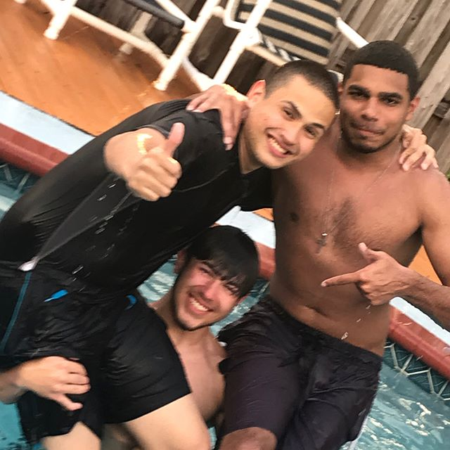

About Me
 Hi, Everyone! My name is Jeffrey Poe and I'm Fresh out of High School, currently attending FAU, completing online courses for Pre-Requisites.
I gravitated towards this particular program because the idea of working on and with computers always facinated me, but I still had no direction to go in.
I did Computer classes in High School but they were always taught by a lazy and near incomprehensible teacher.
I enjoy spending time with friends, as depicted in the photo, videogames, and Jiu Jitsu.
My past working experience has been Landscaping, the nice way to say I mowed Lawns to bring in any kind of income. I've also worked helping my Local Church with Audio and Pipe+Drape, which means the Sound Systems as well as assisting with decoration and drapes.
I have limited experience in this field, but I'm excited to learn and hope to soon become proficient at Coding and Programming through this course. The hope is to be competetive and ready for the workplace, which I intend to fulfill.